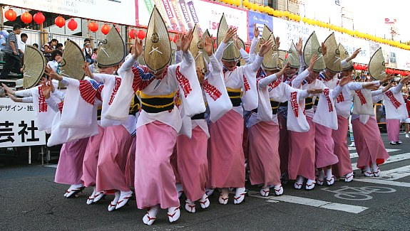

Awa Odori (Tokushima)
The Awa Dance Festival (Awa Odori) is held from 12 to 15 August.
This is event is a part of the Obon Festival in Tokushima.
Awa Odori is the largest dance festival in Japan, attracting over 1.3 million tourists every year.
Awa is the former name for Tokushima Prefecture while Odori means dance.
Groups of choreographed dancers and musicians known as ren dance through the streets,
typically accompanied by the shamisen lute, taiko drums, shinobue flute and the kane bell.
Performers wear traditional obon dance costumes, and chant and sing as they parade through the streets.
Awa is the old feudal administration name for Tokushima Prefecture, and odori means dance